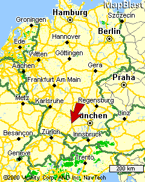
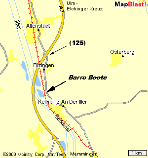

Anfahrt
| SO KOMMEN SIE ZU UNS MIT DEM AUTO: |
|
| Autobahn "A 7" zwischen Ulm und Memmingen
Ausfahrt Nr. 125: "Altenstadt - Kellmünz" auf der Bundesstraße 19 rechts Richtung nach ca. 2 km Ortseingang Kellmünz - auf der rechten Seite Tennishalle © Karte nebenan: www.mapblast.com |

|
direkt bei der Tennishalle rechts ins Gewerbegebiet abbiegen. Schild Barro ALU-Bootsbau an der Kreuzung folgen und dann sehen Sie uns schon. |
 |
Routenplanung ganz einfach - funktioniert in ganz Europa:
Geben Sie in das Kästchen Ihr Wohnort ein und klicken Sie auf "Routenplaner starten".
Sie erhalten eine ganz tolle Wegbeschreibung völlig automatisch.
Hans Barro Aluminium-Bootsbau Steinweg 9 - D-89293 Kellmünz an der Jller Tel. (08337) 75002 - Fax. (08337) 75005